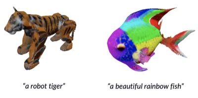
HexaGen3D: StableDiffusion is just one step away from Fast and Diverse Text-to-3D Generation
IEEE/CVF Winter Conference on Applications of Computer Vision (WACV), 2025
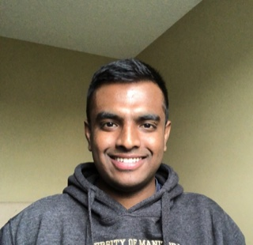
Researcher · Qualcomm AI Research
I work on 3D computer vision and generative AI at Qualcomm AI Research. I completed my MSc in Computing Science from Simon Fraser University, advised by Prof. Yağız Aksoy. Previously, I was a research intern at Borealis AI and received my MSc in Computer Science from the University of Manitoba, advised by Prof. Yang Wang. Before that, I received my BE in Information Science from VTU, India.

HexaGen3D: StableDiffusion is just one step away from Fast and Diverse Text-to-3D Generation
IEEE/CVF Winter Conference on Applications of Computer Vision (WACV), 2025
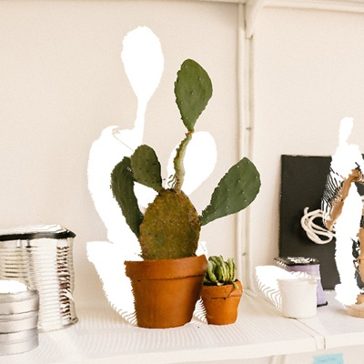
Scale-Invariant Monocular Depth Estimation via SSI Depth
SIGGRAPH, 2024
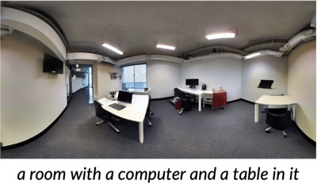
EdgeRelight360: Text-Conditioned 360-Degree HDR Image Generation for Real-Time On-Device Video Portrait Relighting
CVPR Workshop on Efficient and On-Device Generation (EDGE), 2024
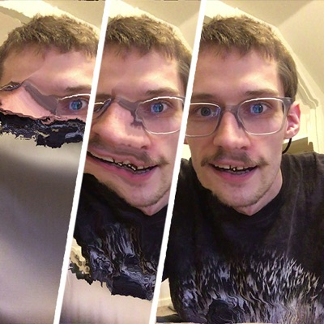
Datamoshing with Optical Flow
SIGGRAPH Asia Posters, 2023
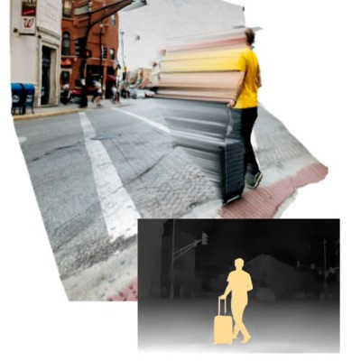
Interactive Editing of Monocular Depth
SIGGRAPH Posters, 2022
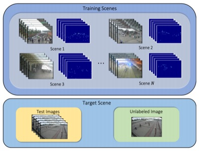
AdaCrowd: Unlabeled Scene Adaptation for Crowd Counting
IEEE Transactions on Multimedia (TMM), 2021
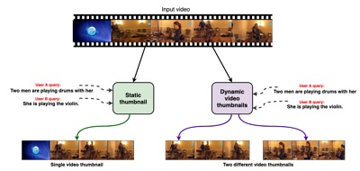
Sentence Guided Temporal Modulation for Dynamic Video Thumbnail Generation
British Machine Vision Conference (BMVC), 2020
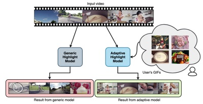
Adaptive Video Highlight Detection by Learning from User History
European Conference on Computer Vision (ECCV), 2020
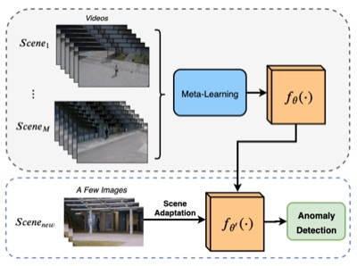
Few-Shot Scene-Adaptive Anomaly Detection
European Conference on Computer Vision (ECCV), 2020 (Spotlight)
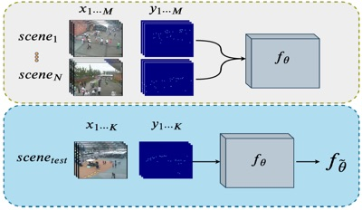
Few-Shot Scene Adaptive Crowd Counting Using Meta-Learning
IEEE/CVF Winter Conference on Applications of Computer Vision (WACV), 2020
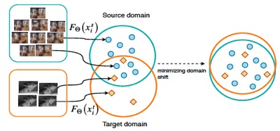
Domain Adaptation in Crowd Counting
Conference on Robot and Computer Vision (CRV), 2020
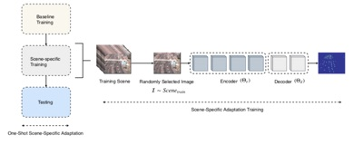
One-Shot Scene-Specific Crowd Counting
British Machine Vision Conference (BMVC), 2019
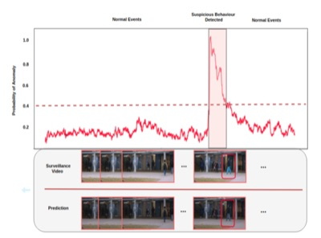
Future Frame Prediction Using Convolutional VRNN for Anomaly Detection
IEEE International Conference on Advanced Video and Signal-based Surveillance (AVSS), 2019
Simon Fraser University
2022
Metric Monocular Reconstruction through Ordinal Depth
University of Manitoba
2020
Scene Adaptive Crowd Counting